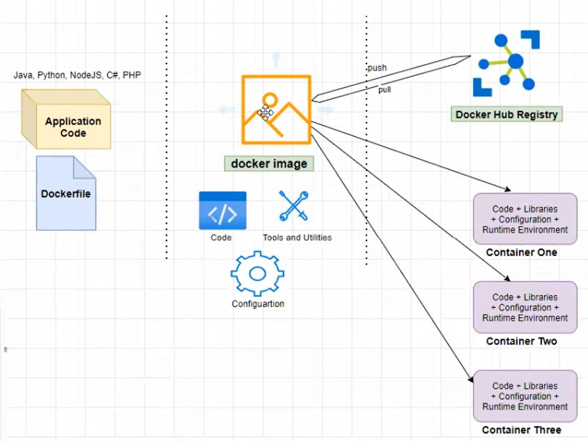

Docker Basics
-
-
Docker
Docker is a tool for creating and managing containers. A container in software development is a standardized unit of software. This standardized unit usually contains code and all the dependencies to run that code. For example, JavaScript code and JavaScript runtime bundled together can be considered as a container. The image typically bundles the source code, dependencies, runtime, configuration and the server together.
We don't need docker to create a container. But, it is a defacto standard for creating containers these days. Creating containers through Dockers come handy when we use the same exact environment for development and production. With docker you can share the code and runtime with other developers easily. Suppose one of your projects require Node 13 and another one Node 14 in your local machine. Instead of uninstalling and reinstalling again and again, we can use two docker containers.
-
VM vs Containers
Can't we achieve the same reproducibility of runtime environment using VM? Yes, in a way. And, with some effort, you can also share the VM configurations across regions and systems. So, VMs work in the same way as containers in the following ways.
- It creates separate environments for the code to run
- Environment specific configurations are possible
- Configurations can be shared and reproduced reliably.
But, compared to containers, VMs have the following drawbacks.
- Redundant duplication (like same OS in multiple VMS)
- Waste of space and performace takes a hit/li>
- Reproducing on another computer or server is cumbersome.
-
Installing Docker
We have to install Docker Desktop or Docker Toolbox in our MacOS and Windows machines. But, Docker is native to Linux and you can directly install Docker Engine on Linux.
We can install the Docker desktop and the WSL 2 update for Linux. Whether we intall the Docker Desktop or Docker Toolbox, ultimately what get installed in our machine is a Docker Engine. If you are installing this in an non Linux machine, them the Docker Engine will be running within a VM installed along with. The VM is there because our OS do not natively support Docker.
The Docker desktop has a daemon running in the background and a CLI on top of the Docker engine. If you want to store the docker images, you can do so in Docker Hub (imagine Git Hub). Then, as the containers get sophisticated, we will use Docker Compose to manage them.
-
Docker Ecosystem
 -
How to...?
Now that we have an idea of what a Docker is, we will see how we can Dockerize our code. I have a very basic Java Spring Boot application here.
- Add a Dockerfile to the project root directory.
- Run the command docker build -t my-first-docker-image .to create a docker image. The docker image is not alive and it just has the code, maven dependencies, run time (tomcat server in this case) and other utilities.
- Tag Docker Image using the command docker tag my-first-docker-image:latest {account name}/my-first-docker-image:v3
- Push Docker Image to Docker hub repository using docker push {account name}/my-first-docker-image.
- Pull Docker Image from docker hub repository.
- Run the pulled Docker image in to our local computer using docker run -p 8090:8080 {account name}/my-first-docker-image.
-
Commands Glossary
- Logging in : docker login
- Building an image : docker build -t my-first-docker-image . The . indicates that the Dockerfile is in the same directory from which we are running the command.
- Tag the image to the Docker Hub account : docker tag my-first-docker-image:latest {account name}/my-first-docker-image:v3
- Push the image : docker push {account name}/my-first-docker-image
- Logging in : docker login
- List all Docker images : docker images
- Removing the Docker Image : docker rmi {image-name}
- Pull (if not available in local) and run the container : docker run -p 8090:8080 {account name}/my-first-docker-image
- List all running containers : docker ps
- Kill a running docker container : docker kill
- To see the logs : docker logs {container name}
- To see the linux container inside the docker running instance : docker exec -it {container name} bash. exit will bring us back.
-
Dockerizing MongoDB
- Start with login as usual : docker login
- Now we want to run the MongoDB from the docker image and not from the instance installed in local. Search for mongo in the docker hub and get the official image. docker pull mongo:latest will download the MongoDB image.
- Once it is installed we want to run the MongoDB by specifying a port of our choice using docker run -d -p 28000:27017 --name mongodb-containter mongo:latest. -d specifies that this DB instance should keep running even when we close the terminal window. -p is for publishing the port. 27017 is the default port for Mongo DB running in our local. Since, that port might have been taken already, we are exposing docker instance of Mongo through the port 28000.
- Please note the Mongo DB instance out of docker image would also be exposed through port 27017. But, that is the port attached to the local host of docker engine running in your laptop and not to the local host of the laptop.